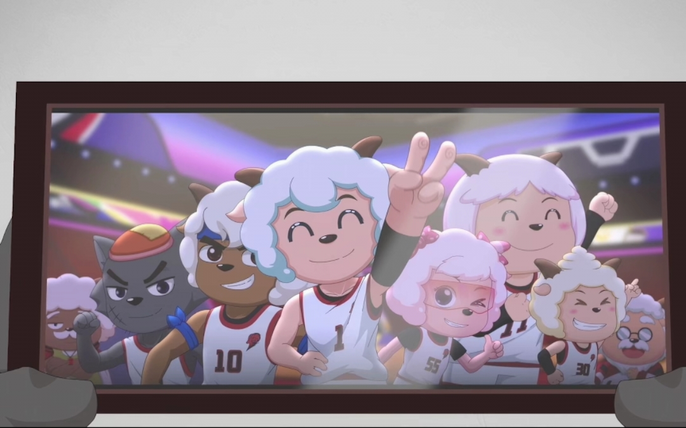

喜羊羊与灰太狼

介绍
《喜羊羊与灰太狼》是由广东原创动力文化传播有限公司制作，黄伟明、赵崇邦导演，黄伟健编剧，
祖丽晴、张琳、高全胜等配音的国产原创动画，于2005年8月3日在杭州电视台少儿频道首播。
该动画讲述了在青青草原，生活着一群无忧无虑的小白羊，而在森林另一端的黑色古堡里，
灰太狼每天都要在老婆平底锅的敲打下前往羊村抓羊羊，
他想处种种办法，更发明许多奇形怪状的工具，然而最终总被机敏的小羊们挫败的故事。
2009年9月23日，该动画获得第十一届精神文明建设“五个一工程”奖。